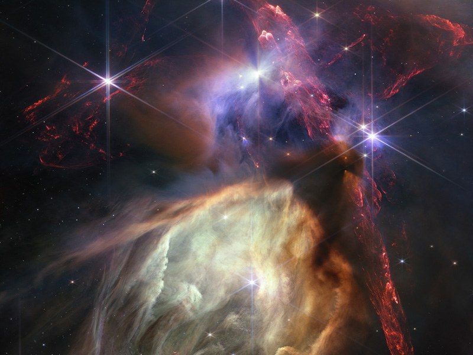

James Webb Space Telescope
Breve Historia
El Observatorio Espacial James Webb, es un flamante telescopio espacial producto de la colaboracio entre la NASA, la ESA (Agencia Europea Espacial) y la CSA (Agencia Canadiense Espacial). Capaz de conducir estudios en el espectro infrarrojo, permite observar en alta resolucion objetos muy lejanos, antiguos y tenues como para verlos con cualquier otro observatorio.
Ficha Técnica:
- Fecha de Lanzamiento: 25/12/2021
- Estado: Activo
- Fecha de Desactivación: --
Top 3 Descubrimientos
En la region de Rho Ophiuchi existe una region pequeña de formacion de estrellas que se puede apreciar en la imagen. En ella se aprecia polvo molecular rojo, que es hidrogeno, mientras otras estrellas tienen la sombra de un disco circunestelar; una pista a la creacion de planetas futuros. A pesar del caos visible en la imagen, esta es una region pequeña y la mas cercana ala tierra de formacion de estrellas.

Al comienzo del 2023, el JWST identifico su primer exoplaneta llamado LHS 475b. Este se encuentra a 41 años luz de la Tierra y posee un diametro similar a ella. Esta rendicion artistica de la observacion, a ayudado a inaugurar una nueva frontera de descubrimientos de exoplanetas similares a la Tierra.
![Foto de la nebulosa de la Tarantula. En sus alrededores se aprecian nubes de gas con estrellas entrelazadas en ella. Dominan colores en la gama de los rojos, anaranjados y a medida que se acercan al centro de la imagen colores mas grises y blancos se convierten en predominantes. En el centro se puede apreciar una pausa donde se puede ver el cielo negro y con un cumulo de estrellas muy luminosas y azules. Cercanas a ellas se encuentra una estrella particularmente luminosa y amarilla propagando su luz en una forma similar a la de un asterisco.](../multimedia/descubrimientos/descubrimiento3_JWST.jpg)
La nebolusa de la Tarantula es la region de formación de estrellas más grande de todo el Grupo Local, region de galaxias en la que la Via Lactea se encuentra. JWST ha ayudado con sus observaciones a entender la composicion de esta nebulosa y al revelar la existencia de protoestrellas en esa region.